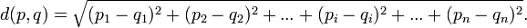
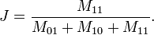
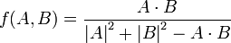
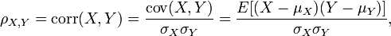
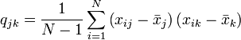
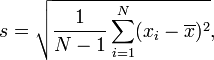
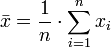
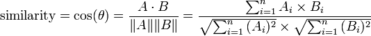

Calculating similarity has many different approaches. The most common ones are described below. These include Euclidean distance, SMC, Jaccard, Tanimoto, Pearson correlation, and cosine similarity. While each of these takes a different route in deciding how similar two objects are the basic concept is the same. If two objects are more alike they will have a “higher” score or greater correlation, otherwise they will have a “lower” score or smaller correlation. I used quotes on higher and lower because these therms are relative based on the metric being used.
Euclidean distance is achieved by taking the linear distance between two data objects in n dimensional space. This is done using the distance formula adapted from the Pythagorean theorem. The distance is the square root of the sum of the squares of the differences between two attributes for every attribute in each of the two objects being compared. An equation is shown below. This is most used for numerical data where the difference between 5 and 3 is very clearly 2. This is not used well for qualitative data even when it can be translated to numeric because of the ambiguity in the distance, ie. is the distance between agree and disagree 2 because neutral is between them?
Euclidean Distance
double Euclidean(double a[], double b[], int size){
double squareSum = 0;
int i;
for(i = 0; i < size; i ++){
squareSum = squareSum + (a[i] - b[i])*(a[i] - b[i]);
}
double dist = sqrt(squareSum);
dist = 1/(1+dist);
return dist;
}
SMC stands for Simple Matching Coefficient. This measurement is the sum of all attributes that are equivalent between two objects divided by all the attributes that describe the objects. So if both are 0 or both are 1 if you're looking at a binary dataset. This is used to commonly where numeric analysis doesn't fit to well and there are discrete options for choices. Most often it comes when data is binary. However this fails when you get to asymmetric data and the number of times that two objects both don't have an attribute far outnumbers the number of times that two objects do have the same attribute. This will give the illusion that two objects are really similar when in reality they have very little to do with each other.
double SMC(double a[], double b[], int size){
int i;
double count = 0.0;
for(i = 0; i < size; i ++){
if(a[i] == b[i]){count++;}
}
return count / size;
}
Jaccard is very analogous to SMC. It looks at the number of time two objects match verses the number of times they don't. However, The difference is that Jaccard doesn't include the time in which both objects have a 0 value looking at boolean values. An equation is shown below. This allows comparison of asymmetric data sets because the large number of times when both objects are 0 won't be included into the distance calculation. That way it's only looking at what both objects have and what they share in common.
Jaccard similarity
double Jaccard(double a[], double b[], int size){
int i;
double count = 0.0;
int denom = 0;
for(i = 0; i < size; i ++){
if(b[i] == a[i] && b[i] != 0){count++;}
if(b[i] != 0 || a[i] != 0){denom++;}
}
return count / denom;
}
Tanimoto coefficient is an extension of the Jaccard coefficient. The difference between the two is rather slight and it the case of binary datasets non existent. The difference lies it the fact that Tanimoto coefficient can deal with non binary datasets and provide a distance for continuous values. They still look for when two values match up and disregard times when both have a 0 value but they don't have to both be 1 to calculate a distance. I have an equation below defining the Tanimoto distance.
Tanimoto distance
The Pearson correlation is another data metric that returns values between -1 and 1. A value close to one means that two objects are quite similar. A value of close to negative one means the objects are quite the opposites. Values close to zero means that there is almost no correlation between the two. The equation for this is the covariance of x and y divided by the product of the standard deviation of x and the standard deviation of y. An equation is provided below to show this. Also I have provided equations for covariance, standard deviation, and mean. This approach has troubles when you look at data that has the same patterns but at a different scale. Such as it will say 1, 2, 3 is perfectly correlated to 2, 4, 6.
Pearson Correlation
covariance
standard deviation
mean
double Pearson(double a[], double b[], int size){
if(size == 0){return 0;}
int i;
double aMean, bMean, cov, asdv, bsdv, val;
for(i = 0; i < size; i ++){
aMean += a[i];
bMean += b[i];
}
aMean /= size;
bMean /= size;
for(i = 0; i < size; i ++){
cov += (a[i] - aMean)*(b[i] - bMean);
asdv += (a[i] - aMean)*(a[i] - aMean);
bsdv += (b[i] - bMean)*(b[i] - bMean);
}
cov /= (size - 1);
asdv = sqrt(asdv/(size-1));
bsdv = sqrt(bsdv/(size-1));
val = cov / asdv / bsdv;
return val;
}
Cosine similarity is calculated by taking the data objects attributes and turning them into vectors. Then take the dot product of those vectors and divide them by the product of the magnitudes of the vectors. This will return an angular separation between the two data objects. This is useful when you want to focus on similar ratios of occurrences. In my reading one example presented was to use this method when comparing two books by looking at their word counts.
Cosine Similarity
double Cosine(double a[], double b[], int size){
int i;
double val, n = 0, d1 = 0, d2 = 0;
for(i = 0; i < size; i ++){
n += a[i] * b[i];
d1 += a[i] * a[i];
d2 += b[i] * b[i];
}
d1 = sqrt(d1);
d2 = sqrt(d2);
val = n/(d1*d2);
return val;
}